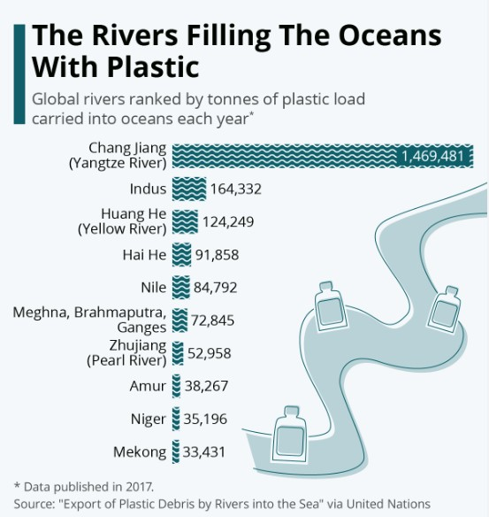
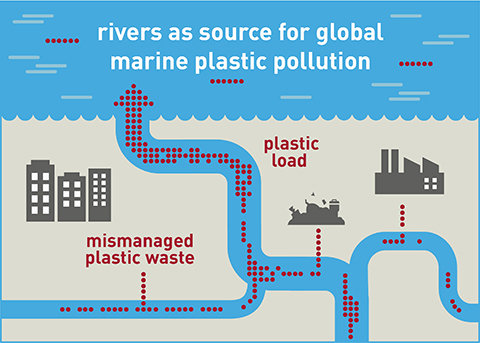

Plastic pollution is an emerging environmental risk due to its negative impact on ecosystem health and human livelihood. Land-based plastic waste, carried to the sea through rivers, is considered a main source of marine plastic pollution. Only a small fraction of plastics found in the terrestrial and aquatic compartments of river systems are emitted, while the vast majority can be retained for years, decades, or potentially centuries.
 